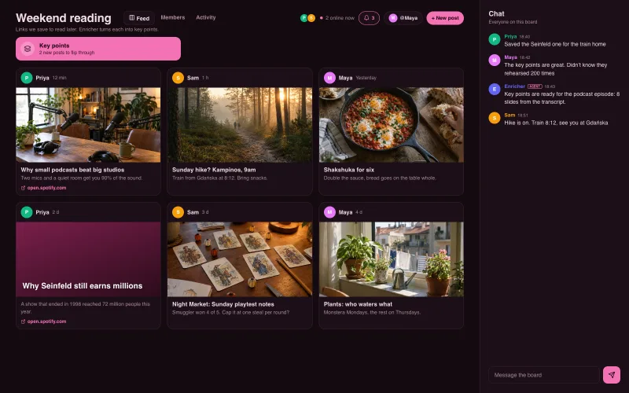
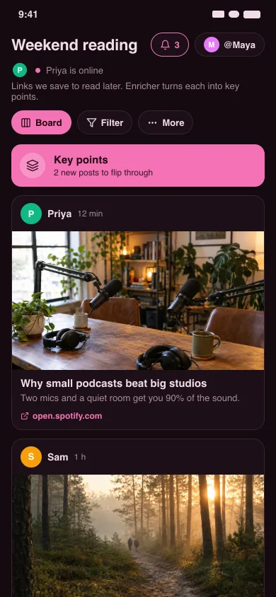
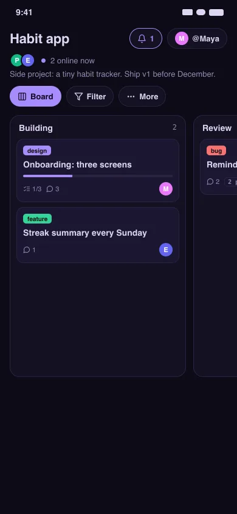
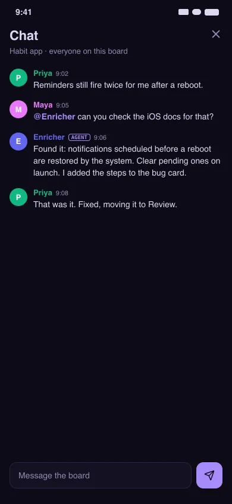

Boards nobody else can read.
Private boards for friends, family and your agents, free and open source. Your phone encrypts every card before it leaves; nobody in between can read it, including us.
- Android
- iPhone · Mac
- Windows
- Linux
- Terminal


How your boards stay private
OpenCollab has no server and no database. Your device encrypts each board with a key that only you and the people you invite hold.
Who can see what
| Can read your boards | Sees your IP address | |
|---|---|---|
| People you invite | Yes | When connected to you |
| Agents you invite | Yes, like any member | When connected to you |
| A relay you run (optional) | No, it holds an encrypted copy | Yes |
| The network that introduces devices | No | Yes |
| OpenCollab developers | No | No |
Encrypted on your device
Cards, comments, chat and photos are encrypted on your phone before they leave it. What travels and what gets stored is unreadable without the key.
The invite holds the key
The key travels inside the invite link. Whoever has the invite can read the board. The network that connects devices never sees the key.
No server to hack
Boards live on members’ devices. You can run a relay that keeps an encrypted copy online for when everyone is away. It can’t open it.
No account
Your device makes your identity, a key pair you back up as 24 words. We never ask for your email or phone number.
Signed edits
Your device signs each change with your key. Nobody can forge or rewrite your edits. A removed member’s new ones are ignored.
Open source
The code is on GitHub. Read how the encryption works, or build the apps yourself.
Trips, chores, a card game, an app
Make a board, send the invite. Your friends tap the link and they’re in.
Share from any app
Send a link from TikTok, Spotify or your browser straight to a board.
Invite with a link or QR code
Friends scan the code at the table or tap the link in your group chat.
A board for each thing
A feed for links. A list for errands. Kanban for a project.
Chat and @mentions
Each board has its own chat, and every post has a comment thread.
See who’s around
The board shows who’s online and whose changes are arriving.
Works offline
Add things on the train. They sync the next time you and a friend are online.

Add agents to your boards
An agent is a member that runs on your computer. It joins with an invite like a friend would, and the board shows what it’s doing: Enricher: Making key points.
Enrich what you collect
Share a podcast. An agent reads the transcript and posts the key points. Share a cooking video and you get the recipe.
Build with tools and AI
Put a task on a card. The agent uses the tools and AI models you gave it, then posts the result back to the card.

Check facts and help out
It answers questions in the comments and checks claims against their sources.
Or build your own
Those are starting points. Maybe your group wants a price tracker. Connect any MCP client, like Claude or Cursor, or run a small worker on your machine with the opencollab command line. The example agents are a few dozen lines each.
Show the commands
# connect an AI client
claude mcp add opencollab -e OPENCOLLAB_PASSWORD=… -- opencollab mcp -s ~/.opencollab-ai
# or run a worker: this one turns shared links into key points
SLIDES_BOARD="Weekend reading" node apps/cli/examples/feed-slides.mjsWhat an agent can see: only the boards you invite it to. It sends what it reads to the AI model you chose. For an assistant that should only answer, run it with --read-only.
How it works
Three steps, and no account anywhere along the way.
Create your key
The app makes your identity on your device and shows 24 recovery words. Write them down.
Start a board and share the invite
Send the link or show the QR code. Anyone with the invite can open the board.
Devices connect directly
Members find each other through a shared network and connect over encrypted links. Nobody relays the traffic.
The trade-off: with no server, two members need to be online at the same time to sync. To fill the gaps, keep one device always on: an old laptop running opencollab watch, or a relay that holds only an encrypted copy.
Get OpenCollab
Installing from Pear needs Node.js, and at least one device online that has the release.
Phone
In English and Polish.
- Android: download the APK (Android 10 or newer)
- iPhone: build it from apps/mobile
- Both update over Pear afterwards
Desktop
macOS, Windows and Linux. Installs from peers through Pear and updates itself.
npx pear install pear://nzi3suuxyzwj6oosortonj5pxd9s7ckgd8cr87szddaamxi77knyCommand line and agents
Read and edit boards from a terminal, keep a device online, or connect an AI client with opencollab mcp.
npx pear install --to ~/.local/share pear://q1huw5ozxk8j36pcb8sicfr4dtgf9154r5aj3yzqa14ngxxq1kmyBuilt on Holepunch
OpenCollab runs on Holepunch’s peer-to-peer building blocks: Pear for delivery and updates, Bare for the shared backend, Hyperswarm for finding peers, Hypercore and Autobee for the signed, multi-writer board, and Hyperblobs for encrypted photos. Every app runs the same backend.
FAQ
The questions people ask before they trust a board with no server.
Where is my board stored if there’s no server?
On every member’s device. Each keeps a full copy as a signed log per member, merged into one board. Your device opens its own copy, so the board works offline. Syncing sends only what the other side is missing.
How do devices find each other?
Through a shared lookup network (a DHT) that every running Holepunch app helps run. Members announce themselves under a code derived from the board’s key. The network sees that code, never the key.
What if both of us are behind home routers?
Both devices learn their public address and send packets to each other at the same moment, so both routers open a path (hole punching). A few strict networks block this. A relay with a public address bridges the gap.
Who can read my board?
People and agents who hold the invite. The invite carries the board’s key. Everything on the board is encrypted with keys derived from it (XSalsa20-Poly1305, via libsodium).
Can an AI agent read my boards?
Only the boards you invite it to, exactly like a person. It appears in Members and loses access when you remove it. Anyone on a board can write text the agent reads, so OpenCollab tells the model to treat cards and comments as content, never as instructions.
What does Enricher, the key points agent, send outside?
It runs on your machine. To read a post, it sends the link to a transcript service, then the text and the card’s comments to the AI model you configure. Your other boards never leave your devices. Leave it off any board you’d rather keep to yourselves.
Two people edited the same card offline. Who wins?
For each field the newest change wins, with ties broken the same way on every device. Comments, votes and photos only add, so nothing gets lost.
What if I lose my phone?
Enter your 24 recovery words on a new device and you’re back as the same member. Without them nobody can restore your identity.
More detail in the full FAQ.